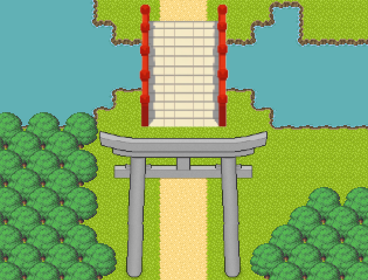
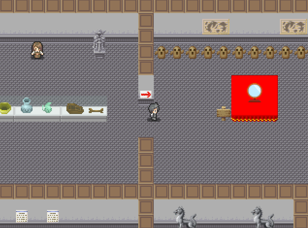
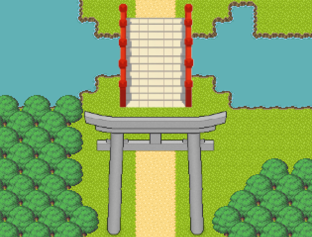
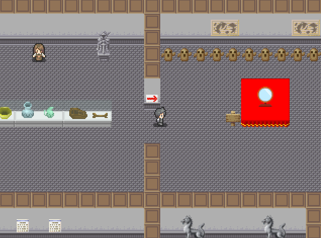
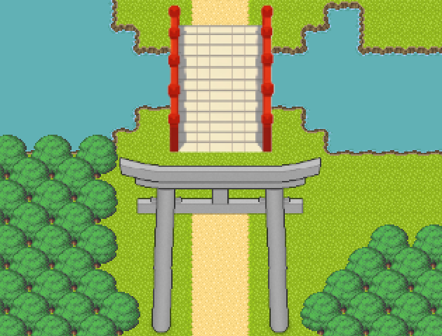
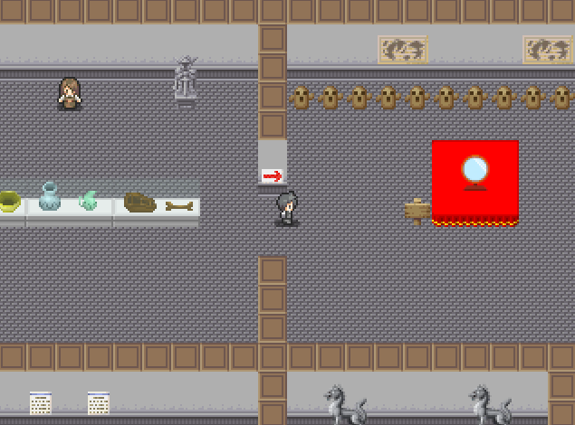
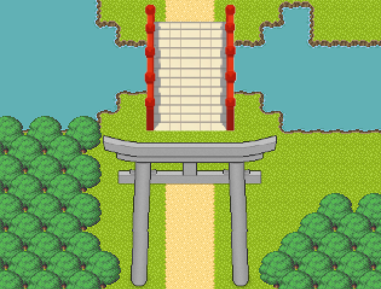
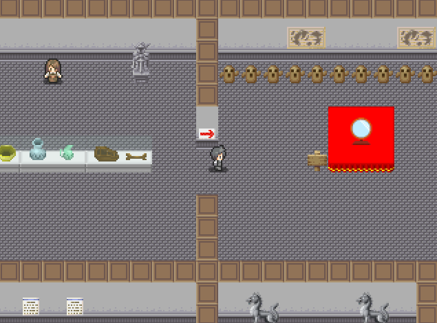

修学旅行で太宰府を訪れた中学2年生・わたる。
観光気分で天満宮や博物館を巡っていたはずが――
気づけば、妖怪がウロつく不思議な異世界に迷い込んでいた!?
『太宰府カンコー奇聞わたる』は、現代日本の太宰府を舞台にした、 ちょっと不思議で、どこか懐かしい正統派ファンタジーRPGです。
クラスメートたちと観光地・太宰府を歩き回りながら、現代と異世界を行き来して、妖怪たちの野望を阻止するため奮闘します。
観光して、迷い込んで、バトルして、おみくじ引いて。
あなただけの太宰府を体験してください。